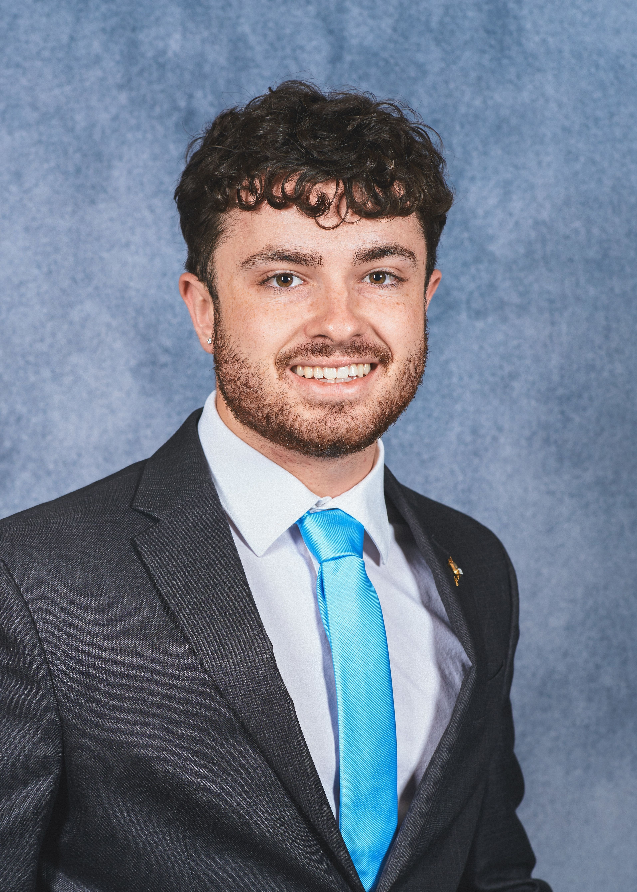
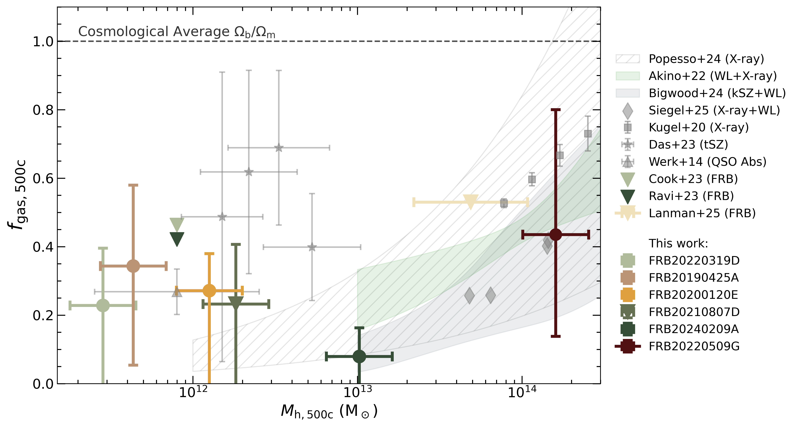
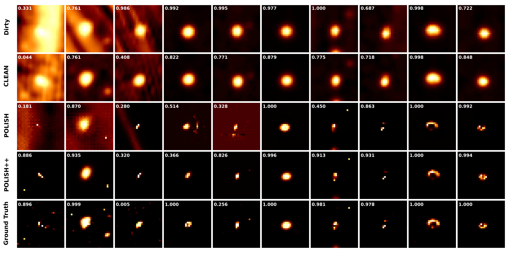

Samuel Darian McCarty
First year PhD student in Astronomy & Astrophysics at the Center for Astrophysics | Harvard & Smithsonian
I am an astrophysicist broadly interested in extragalactic astronomy and cosmology (i.e. the big stuff). I've recently earned a B.S. magna cum laude with departmental honors in Physics and Astronomy from the University of Washington (Go Dawgs!), and started a PhD in Astronomy & Astrophysics at the Center for Astrophysics | Harvard & Smithsonian in Fall 2025. During my undergrad, I worked in several areas including projects focused on the intergalactic medium with Dr. Matthew McQuinn, the circumgalactic medium with Dr. Jessica Werk, and exoplanet biosignatures with Dr. Victoria Meadows. In my senior thesis, I built a forward model to predict the number and type of gravitational lenses expected in next generation radio surveys such as by the Deep Synoptic Array 2000, supervised by Dr. Liam Connor. Since joining the CfA, I have started a new project with Dr. Connor using Fast Radio Bursts to study the circumgalactic medium. I have also begun a project focusing on new and improved ways to use the JWST NIRSpec insrtument with Dr. Daniel Eisenstein. Aside from research, I have been involved in several outreach and mentoring activities and will continue to give back to my new community in Boston during grad school. My hobbies include hiking and being outside, going to the gym, rock climbing, and spending time with my amazing partner Kate.
samuel.mccarty@cfa.harvard.edu
Office A-102
60 Garden Street, MS-10
Cambridge, MA 02138
Research
Projects
The CGM with local universe Fast Radio Bursts
Most of the baryonic matter in the universe exists in diffuse, hard to measure gas in the inter- and circumgalactic medium. Fast radio bursts (FRBs) are a promising probe this gas. I am using local universe FRBs to study the circumgalactic medium of the Milky Way and relatively nearby galaxies.
Radio Strong Lensing
Strong gravitational lensing has important astrophysical and cosmological applications. Strong lensing science at radio wavelengths has distinct advantages, but has been limited for decades by small sample size. In McCarty and Connor 2025, I forescasted the number of strong lenses expected to be discovered by the upcoming DSA-2000 and SKA-mid radio telescopes, finding that they will each discover as many as 105 new lenses. In Wu et al. (in prep), I demonstrated that emerging deep learning radio imaging algorithms will enable the discovery of lens systems with Einstein radii at or below the instrument PSF limit, potentially increasing the yield of galaxy scale lenses by an order of magnitude. I have just been awarded 16 hours of VLA time to follow up promising lens candidates we have identified in the Very Large Array Sky Survey. These radio lenses will provide immediate science gains but also help pave the way for lensing science with the next generation of radio telescopes.
